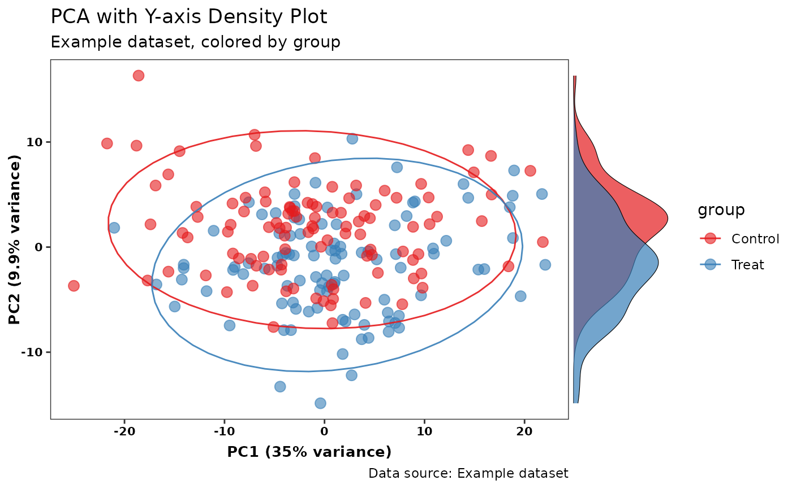
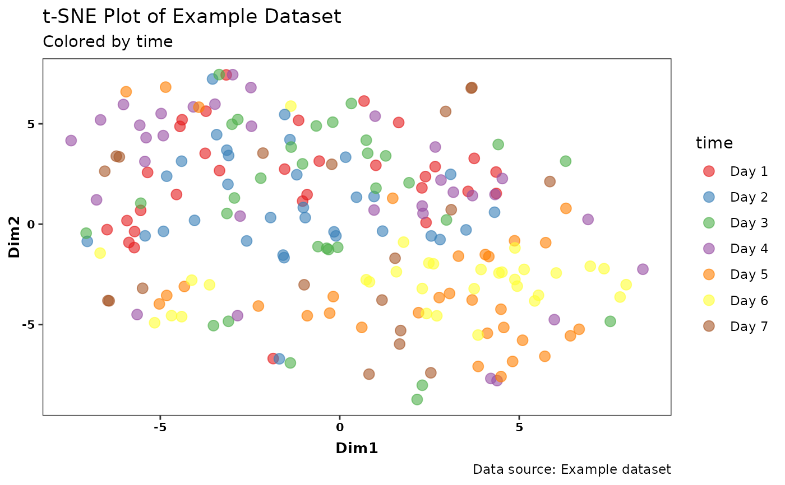

This function generates dimensionality reduction plots (PCA, t-SNE, UMAP) with options for custom labels, titles, density plots, and faceting. It allows users to visualize high-dimensional data using various dimensionality reduction techniques.
Usage
ggpca(
data,
metadata_cols,
mode = c("pca", "tsne", "umap"),
scale = TRUE,
x_pc = "PC1",
y_pc = "PC2",
color_var = NULL,
ellipse = TRUE,
ellipse_level = 0.9,
ellipse_type = "norm",
ellipse_alpha = 0.9,
point_size = 3,
point_alpha = 0.6,
facet_var = NULL,
tsne_perplexity = 30,
umap_n_neighbors = 15,
density_plot = "none",
color_palette = "Set1",
xlab = NULL,
ylab = NULL,
title = NULL,
subtitle = NULL,
caption = NULL
)Arguments
- data
A data frame containing the data to be plotted. Must include both feature columns (numeric) and metadata columns (categorical).
- metadata_cols
A character vector of column names or a numeric vector of column indices for the metadata columns. These columns are used for grouping and faceting.
- mode
The dimensionality reduction method to use. One of
"pca"(Principal Component Analysis),"tsne"(t-Distributed Stochastic Neighbor Embedding), or"umap"(Uniform Manifold Approximation and Projection).- scale
Logical indicating whether to scale features (default:
TRUEfor PCA). Not used for"tsne"or"umap".- x_pc
Name of the principal component or dimension to plot on the x-axis (default:
"PC1"for PCA).- y_pc
Name of the principal component or dimension to plot on the y-axis (default:
"PC2"for PCA).- color_var
(Optional) Name of the column used to color points in the plot. If
NULL, no color is applied. Supports both discrete and continuous variables. Default:NULL.- ellipse
Logical indicating whether to add confidence ellipses for groups (only supported for PCA and only if
color_varis discrete; default:TRUE).- ellipse_level
Confidence level for ellipses (default:
0.9).- ellipse_type
Type of ellipse to plot, e.g., "norm" for normal distribution (default:
"norm").- ellipse_alpha
Transparency level for ellipses, where 0 is fully transparent and 1 is fully opaque (default:
0.9).- point_size
Size of the points in the plot (default:
3).- point_alpha
Transparency level for the points, where 0 is fully transparent and 1 is fully opaque (default:
0.6).- facet_var
Formula for faceting the plot (e.g.,
Category ~ .), allowing users to split the plot by different groups.- tsne_perplexity
Perplexity parameter for t-SNE, which balances local and global aspects of the data (default:
30).- umap_n_neighbors
Number of neighbors for UMAP, which determines the local structure (default:
15).- density_plot
Controls whether to add density plots for the x, y, or both axes. Accepts one of
"none","x","y", or"both"(default:"none").- color_palette
Name of the color palette (used for discrete variables) to use for the plot. Supports
"Set1","Set2", etc. fromRColorBrewer(default:"Set1").- xlab
Custom x-axis label (default:
NULL, will be auto-generated based on the data).- ylab
Custom y-axis label (default:
NULL, will be auto-generated based on the data).- title
Plot title (default:
NULL).- subtitle
Plot subtitle (default:
NULL).- caption
Plot caption (default:
NULL).
Value
A ggplot2 object representing the dimensionality reduction plot, including scatter plots, optional density plots, and faceting options. The plot can be further customized using ggplot2 functions.
Examples
# \donttest{
# Load dataset
pca_data <- read.csv(system.file("extdata", "example.csv", package = "ggpca"))
# PCA example
p_pca_y_group <- ggpca(
pca_data,
metadata_cols = c(1:6),
mode = "pca",
color_var = "group",
ellipse = TRUE,
density_plot = "y",
title = "PCA with Y-axis Density Plot",
subtitle = "Example dataset, colored by group",
caption = "Data source: Example dataset"
)
print(p_pca_y_group)

# t-SNE example
p_tsne_time <- ggpca(
pca_data,
metadata_cols = c(1:6),
mode = "tsne",
color_var = "time",
tsne_perplexity = 30,
title = "t-SNE Plot of Example Dataset",
subtitle = "Colored by time",
caption = "Data source: Example dataset"
)
print(p_tsne_time)

# }